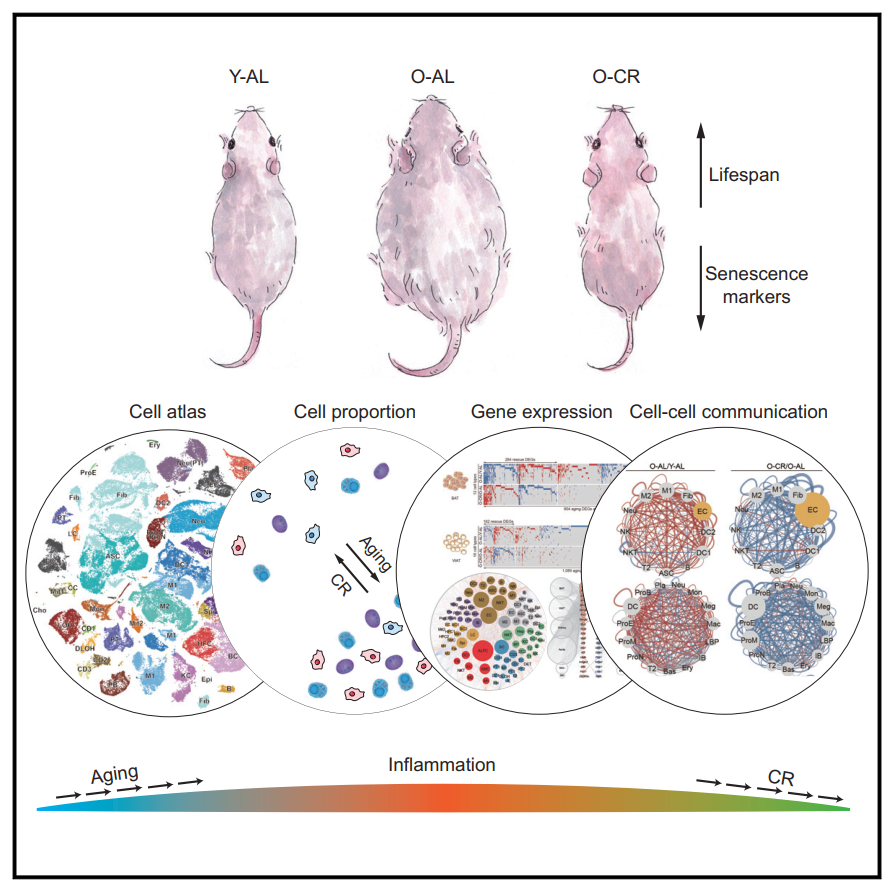

Caloric Restriction Reprograms the Single-Cell Transcriptional Landscape of Rattus Norvegicus Aging
Ma et.al.; Cell 180, 984–1001, March 5, 2020; https://doi.org/10.1016/j.cell.2020.02.008
Abstract
background
衰老是全身多种组织功能下降的原因，而这种progressive loss可以被卡路里限制 (caloric restriction, CR)所延缓(delayed)。
aims (problems to be solved)
然而，衰老过程和经受CR改善的细胞图谱和标志物尚未被描述。
experimental design
这里，我们建立了衰老的和接受CR的大鼠(rat)的多组织单细胞/单细胞核转录组 atlases.
key results
CR 延缓(attenuate) 了衰老相关的变化，具体包括细胞组成、基因表达和核心转录调控网络
免疫细胞随衰老增加，而CR选择性地逆转了衰老所扰乱的免疫生态系统 (the aging-disturbed immune ecosystem)
计算预测表明在衰老过程中观察到的异常细胞间交流，包括过度的促炎性配体-受体相互作用，可以被CR所逆转
summary
我们的工作提供了衰老和接受CR的哺乳动物的多组织单细胞转录全景图 (landscapes), 增强我们对于CR作为一种稳健的老年保护干预手段的认知；并揭示了代谢干预是如何作用于免疫系统以更改衰老的进程
Results

Construction of Rat Cell Atlases by scRNA-Seq
- 实验流程图展示年轻大鼠（5-month-old）到中年时（18-month-old）开展Aging (随意进食(ad libitum, AL))和CR (70% Caloric Restriction)实验到27-month-old时取样进行单细胞测序。同时，展示单细胞测序取样的示意图，图上标了9个组织，实际测了7个组织 (BAT, WAT, livers, kidneys, aortas, skin, and bone marrow (BM) )。
- 在衰老过程中，CR大鼠相较正常大鼠的体重较低，血糖水平相当，寿命延长 （lifespan median较正常大鼠增加5个月）
- 单细胞图谱：整合展示不同年龄、不同进食条件，以及不同的测序技术的profiles
- 展示各细胞类型在不同组织中的分布比例

Changes in Cell Proportions during Aging and CR
- dot-plot 展示各细胞类型在不同组织中的占比，并比较不同状态的细胞比例变化 (Young-AL/Old-AL & Old-AL/Old-CR)
- 观察免疫细胞 (Ptprc+)在不同状态下的细胞图谱，发现免疫细胞，例如Neutrophil and Plasmocyte 在衰老过程中增加，while rescued by CR; 此外，在衰老的组织中，M1 (促炎) / M2 (抑炎) 的比例有所上升，而CR也可以逆转这种上升的比例，表明CR诱导巨噬细胞从促炎型到抑炎型的极化

Changes in Transcriptional Profiles during Aging and CR
- aging DEGs: Young-AL/Old-AL
- CR DEGs: Old-AL/Old-CR
- rescue DEGs: reversal differential expression by CR
- Heatmap 展示不同组织当中rescue DEGs 和aging DEGs，CR DEGs的数目

CR as an Effective Intervention to Reprogram the Aging Transcriptome
- 韦恩图展示所有组织中，aging DEGs, CR DEGs 以及rescue DEGs
- 风玫瑰图分别展示三种DEGs在不同组织中的分布
- Rescue DEGs的功能富集分析
- 韦恩图展示各组织rescue DEGs的overlap，标注一部分有生物学意义的基因

DEG Networks Resolving Gene Expression Heterogeneity among Different Cell Types
- 为了探究DEGs的细胞特异性，使用基因表达网络分析，并统计各个细胞中的aging DEGs, rescue DEGs 和两者的比例。作者用网络图展示不同细胞类型中的DEG数目，越多的DEGs节点则越大。结果表明，由于ALPCs, NKTs and neutrophils 的aging DEGs最大，所以它们受aging影响最大；而ALPCs, M2 and ECs 的CR rescue效果最好；文中还列举组织特异性的例子，不再展开。
- 统计了不同细胞中rescue DEGs出现的频次，展示top 15的rescue DEGs

Changes in Core Regulatory Transcription Factors during Aging and CR
- 韦恩图展示aging, CR and rescue TFs
- 风玫瑰图分别展示三种TFs在不同组织中的分布
- 展示rescue TFs 在不同组织中DEGs靶标的分布；以及在不同组织中具体的rescue TFs

Changes in Ligand-Receptor Interactions between Different Cell Types during Aging and CR
- 展示细胞间配体-受体相互作用网络图，分别时Old-AL/Young-AL和Old-CR/Old-AL上调或下调的相互作用
- 对CR消除的配体-受体相互作用进行功能富集分析
- 统计不同组织中CR消除的配体-受体相互作用频次

Note
本文最主要的是给出了年轻和年老，还有CR后的多组织大鼠单细胞图谱。
作者提出本文最主要的是说明衰老过程中炎症反应的上升会被CR所抑制
The primary discovery in the current study is that the increase in the inflammatory response during aging could be systemically repressed by CR
但我感觉更加重要的是给出具体发生改变的免疫细胞类型和相关基因。进一步可以探讨的是aging过程中炎症的增加是否是由于免疫细胞比例改变引起的，以及具体是何种细胞。
这篇文章中的DEGs，TFs网络分析，还有细胞间配体-受体相互作用分析值得学习
Related Work
Single-Cell Transcriptomic Atlas of Primate Ovarian Aging
Aging increases cell-to-cell transcriptional variability upon immune stimulation
An atlas of the aging lung mapped by single cell transcriptomics and deep tissue proteomics
Heterogeneity in old fibroblasts is linked to variability in reprogramming and wound healing
Single-cell analysis reveals T cell infiltration in old neurogenic niches
A Single-Cell Transcriptome Atlas of the Aging Drosophila Brain